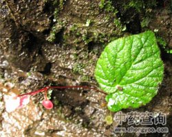

一点血

拼音
Yì Diǎn Xuè
别名
红砖草（《全展选编·妇产科》）。
来源
为秋海棠科秋海棠属植物网脉秋海棠Begonia wilsonii Gagnep.，以根茎入药。秋季采挖根状茎。
生境分布
生于溪边或阴湿石岩上。在四川有分布。
药材特点
多年生肉质草本，高20-30厘米。根状茎短而肥厚，稍呈块状，节处有明显环纹，断面红色，有短而弯曲的须状根多条。无茎。基生叶1-2，具长柄，肉质，膜质托叶卵状披针形，棕色，光滑。叶片近菱形或斜卵圆形，长10-15厘米，宽10-12厘米，先端尖，基部斜心形，两侧不对称，上部3-7浅裂，裂片三角形，边缘有突尖细锯齿，掌状主脉5-7条，上面浅绿色，疏生短刺毛，下面稍带红紫色，可见网状细脉。夏季抽出花葶，与叶柄近等长，可达20厘米。聚伞状花序着生先端，有花5-6朵，花梗纤弱，基部有卵状披针形的小苞叶，花单性同株；雄花花被片4，内外各2，外花被片卵形，内花被片长椭圆形，雄蕊10-25，离生；雌花具花被片3，外2内1，外花被片宽卵圆形，内花被片卵圆形至长椭圆形，浅红色；子房呈纺锥形，3棱，3室，每室具多数胚珠，花柱3，离生。蒴果无翅。
性状
干燥根茎呈圆柱形，弯曲，外表棕黄色，具扭曲的纵皱纹及须根残痕。质脆，横断面平坦，中心有一棕红色的圆心，如一点血状。
性味
甘、苦，平。
功能主治
补气健脾，养血、止血。病后虚弱，咳嗽咯血，功能性子宫出血，白带。
用法用量
0.5-1两。
化学成分
根状茎显强心甙、黄酮类、鞣质、酚类、甾醇、三萜类、皂甙反应。
药理作用
1：无药理作用
摘录
《全国中草药汇编》